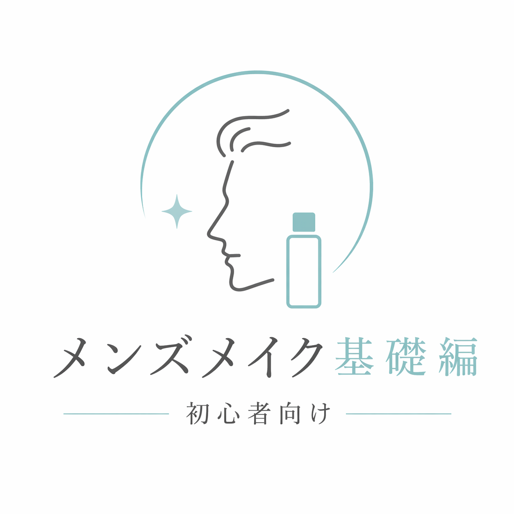
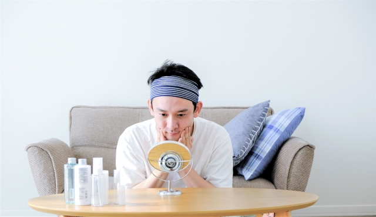
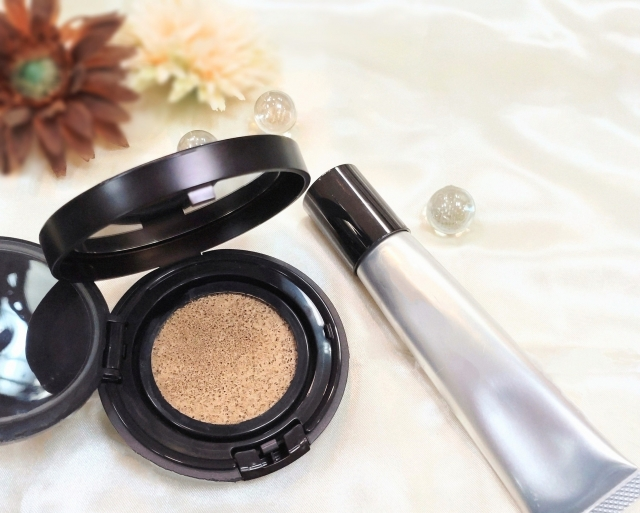
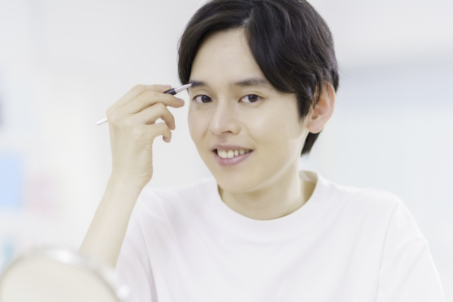
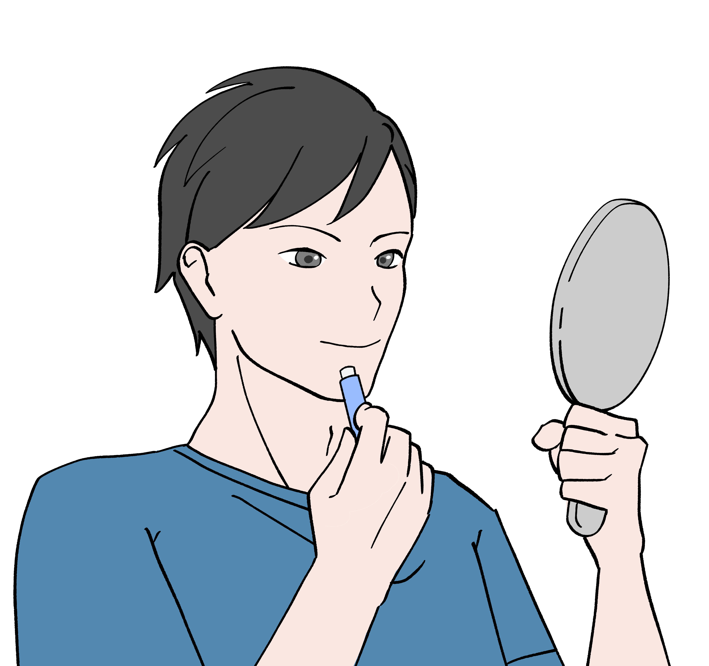

Step1 洗顔＿顔に残った汚れや皮脂をしっかり落そう！
メイク前の肌は、まずきれいに整えておくことが大切です。
顔に皮脂や汚れが残っていると、ベースメイクがムラになったり、崩れやすくなったりします。
洗顔では、強くこすらず、やさしく汚れを落とすことを意識します。
すっきりした状態に整えるだけでも、そのあとの仕上がりは変わります。
ひげが生えている人はこの間に剃っておきましょう
POINT
洗いすぎは乾燥の原因になるため、泡でやさしく洗うのが基本です。
メンズメイクを始めてみたいという初心者向けに、
基本の流れをわかりやすくまとめました。

メイク初心者向けに、最初に押さえておきたい基本の流れを5つのステップでまとめました。
まずは全体の順番を知ってから、気になる部分を詳しく見ていきましょう。
顔に残った汚れや皮脂をしっかり落としましょう。
メイク前の肌を整えるための、最初の大切なステップです。
化粧水を顔全体にしみこませ、肌の乾燥を防ぎます。
うるおいを与えておくことで、メイクが崩れにくくなります。
下地・ファンデーション・パウダーで肌を整えます。
色ムラや気になる部分を自然にカバーする役割があります。
眉毛は、顔の印象や清潔感を整える大切なポイントです。
少し整えるだけでも、全体がすっきり見えやすくなります。
リップクリームで唇を整えるだけでも、清潔感のある印象につながります。
色を足しすぎなくても、自然なうるおいで十分です。
ここからは各ステップごとに細かく解説しています。
わからないところは繰り返し読んで感覚をつかんでいきましょう。
メイク前の肌は、まずきれいに整えておくことが大切です。
顔に皮脂や汚れが残っていると、ベースメイクがムラになったり、崩れやすくなったりします。
洗顔では、強くこすらず、やさしく汚れを落とすことを意識します。
すっきりした状態に整えるだけでも、そのあとの仕上がりは変わります。
ひげが生えている人はこの間に剃っておきましょう
POINT
洗いすぎは乾燥の原因になるため、泡でやさしく洗うのが基本です。

保湿は、肌にうるおいを与え、メイクをなじみやすくするための大切なステップです。
肌が乾いていると、粉っぽく見えたり、時間がたつと崩れやすくなったりします。
化粧水で水分を与え、肌を整えておくと、自然で清潔感のある印象に近づきやすくなります。
まずはつけすぎず、自分に合う量を見つけることが大切です。
POINT
口まわりや頬など、乾燥しやすい部分は特に丁寧に整えておきましょう。

肌を整えて、自然で清潔感のある印象に近づけよう！
ベースメイクは、肌の色ムラや気になる部分を自然に整えるためのステップです。
初心者のうちは、しっかり隠すことよりも、厚く見えないように薄く整えることを意識すると取り入れやすくなります。
ベースがきれいに仕上がるだけでも、顔全体の印象はかなり変わります。
下地は、メイク前の肌を整えて、ファンデーションをなじみやすくする役割があります。
毛穴や凹凸を目立ちにくくしたり、乾燥や皮脂による崩れを防ぎやすくしたりするため、ベースメイクの最初に取り入れたいアイテムです。
塗るときは、一度にたくさん出すのではなく、少量を顔の数か所にのせてから、薄く広げていくのが基本です。
特に頬や鼻まわりはムラになりやすいため、厚くなりすぎないように意識しながら、均一に整えましょう。
ファンデーションには、リキッド、クッション、パウダーなどいくつかの種類があります。
それぞれ仕上がりや使いやすさが少しずつ違うため、自分に合ったものを選ぶことが大切です。
リキッドタイプは肌になじみやすく、自然に見せやすいのが特徴です。
クッションタイプは手軽に使いやすく、初心者でも比較的扱いやすいアイテムです。
パウダータイプは軽い仕上がりになりやすく、べたつきが気になる人にも取り入れやすいです。
どのタイプでも大切なのは、一度にたくさん塗らないことです。
少量ずつのせながら、必要な部分を中心に整えていくと、自然な仕上がりになりやすくなります。
リキッドやクッションは、頬など広い部分から少しずつ広げていき、フェイスラインは薄めにすると自然に見えます。
パウダーは、こすらず軽くのせるように使うと、厚塗り感が出にくくなります。
気になる部分だけ少し重ねるくらいの意識で使うと、初心者でも失敗しにくいです。
パウダーは、ベースメイクの仕上げとして使うことで、べたつきを抑えたり、崩れにくくしたりする役割があります。
特に鼻まわりやおでこなど、皮脂が出やすい部分に軽くのせると、時間がたったあとも整って見えやすくなります。
ただし、つけすぎると粉っぽく見えることがあるため、少量をふんわりのせるのがポイントです。
顔全体にしっかりのせるというより、必要な部分を中心に整えるように使うと自然です。
POINT
ベースメイクは、隠しすぎるよりも薄く整える意識の方が、初心者には取り入れやすく自然に見えます。

眉毛は、顔全体の印象を大きく左右するパーツです。
肌を整えるだけでなく、眉毛を少し整えることで、清潔感や大人っぽさが出やすくなります。
最初は細かく描き込みすぎず、毛流れを整えながら、足りない部分を少しずつ補うだけでも十分です。
また、元から毛深い人は眉毛サロンに行き、すっきりと整えることをお勧めします。
顔全体のバランスを見ながら、自然に整えることを意識しましょう。
POINT
濃く描きすぎると不自然に見えやすいため、少しずつ調整するのがおすすめです。

リップは、最後に口元を整えて、顔全体をすっきり見せるためのステップです。
初心者の場合は、色をしっかりのせるよりも、まずは乾燥を防いで自然なうるおいを出すだけでも十分です。
唇が整うと、不健康な印象をやわらげやすくなり、全体の清潔感にもつながります。
無理に色を足さなくても、自然に見せる意識で取り入れると使いやすくなります。
POINT
ツヤが強すぎない、ナチュラルな保湿系アイテムから始めると取り入れやすいです。
メイク初心者は、最初からすべてを完璧にこなそうとしなくても大丈夫です。
洗顔、保湿、ベースメイク、眉毛、リップといった基本の流れを意識するだけでも、顔全体の印象は少しずつ変わっていきます。
大切なのは、無理に濃く仕上げることではなく、自分に合ったやり方で自然に整えることです。
まずはできるステップから少しずつ取り入れて、自分に合う方法を見つけていきましょう。